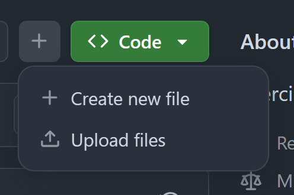
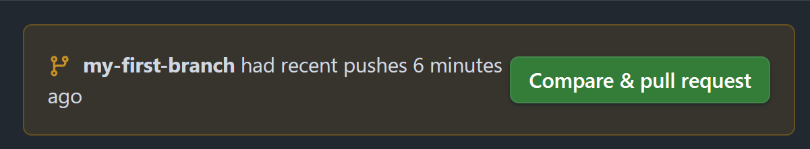
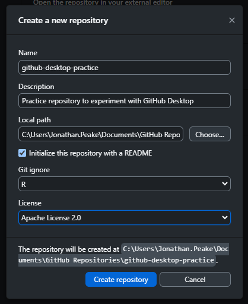
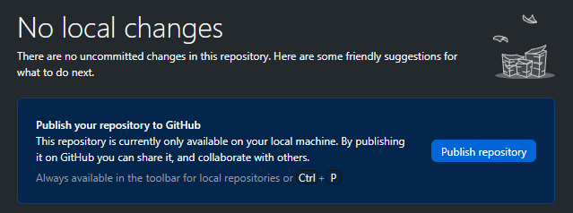

Introduction to Git and GitHub
GitHub is an important platform for many NOAA Fisheries staff and teams to share and collaborate. In 2023, an Authorization To Use for GitHub Enterprise Cloud was signed, which provides a secure, private, access-controlled and managed platform for staff. In 2024, the GitHub Governance Team (GGT) provided a series of workshops to onboard NOAA Fisheries scientists to GitHub Enterprise and provide training in the use of Git and GitHub for NOAA Fisheries. In 2025, NMFS Open Science will be leading a second iteration of these workshops to provide NOAA Fisheries staff with the necessary skills to effectively incorporate Git and GitHub into existing workflows.
The GGT has outlined several use cases for why you may want to incorporate Git and GitHub into your workflows:
- Development and distribution of scientific products and fundamental research communications.
- Development of software and statistical packages for data analysis, e.g. stock assessment models.
- Project/team management using GitHub project boards, issue tracking, task tracking.
- Collaborative development of reports that combine data, resource intensive analysis, and text.
- Automated report generation (using connection to online database and continuous integration).
- Educational resources and learning activities.
Aims and Objectives
This introduction to Git and GitHub virtual workshop will be repeated twice weekly for three weeks. These sessions will use a mixture of directed, interactive lessons and GitHub Skills to provide NOAA Fisheries staff with the knowledge required for basic repository management using Git commands, collaboration, and project management.
Prerequisites: What do I need before this workshop to follow along on my own?
- Create a GitHub account
- Install GitHub Desktop - Note that this will also install Git on your machine
- Request access to NMFS GitHub Enterprise Cloud (NMFS staff and affiliates only)
- Download the NMFS GitHub Enterprise Cloud user agreement
- Use this Google form to request access to Enterprise
- Wait for follow-up email and confirm you’re a member (if you see a 404 page you haven’t been added yet)
- Log into GitHub and GitHub Desktop using your GitHub account credentials
Why Git/GitHub?
GitHub Enterprise
Git and GitHub: The basics
Introduction to GitHub - Tutorial
GitHub Skills - Introduction to GitHub
We’ll be using the Introduction to GitHub Skills Tutorial to get our feet wet with Git and GitHub. Follow along with the tutorial using your personal GitHub account.
Step 1: Copy the exercise
Open the GitHub Skills link, and make sure you are logged into GitHub. Use the “Copy Exercise” button to make a new repository on your account:

When you open up the “Copy Exercise” link, you will be presented with the “Create a new repository” interface. Keep all of the defaults, and click the green “Create repository” button: 
These actions use “minutes”, which are limited in a private repository, but unlimited in a public one. We suggest keeping your GitHub Skills tutorial repositories public to avoid any minutes limitations.
GitHub Actions can take a little bit of time to run, so waiting this requisite time is important! Refresh the instructions after 20 seconds to make sure everything updates properly.
Step 2: Start the exercise
After waiting the suggested 20 seconds, refresh the instructions page. You’ll notice that the “Copy Exercise” button has switched from green to gray, and the “Start Exercise” button has switched from gray to green.
Right click the “Start Exercise” button and open it in a new tab. This will open an Issue for this repository that will serve as the instructions for the exercise.


Step 3: Follow the exercise
Create a new branch
Create a new branch following the instructions in the tutorial:

Be sure to wait until the bot is finished before starting the next part of the exercise!
Create a commit with a new file
Click the “Add file” button to create a new file named PROFILE.md

GitHub dynamically shortens certain buttons and tabs based on the size of the window. In this case, the “Add file” button becomes the “+” button:

Add a line to the new file, and click the “Commit changes” green button:

Change the “Commit message” to “Add PROFILE.md” and click “Commit changes” to confirm the commit

Open a pull request
Refresh the repository and click the “Compare & pull request” button.

Edit the title field to read “Add my first file”, and provide a brief description of your pull request. Click “Create pull request”


Merge the pull request
Click the green “Merge pull request” button, and confirm the merge. Delete the branch after merging (don’t worry, you can always restore a deleted branch)

Working in GitHub Desktop - Tutorial
To get a bit more experience working with GitHub repositories, we are going to clone our tutorial repository, create a repository in GitHub Desktop, make a commit, and push our changes up to GitHub.
Step 1: Log into GitHub
If this is your first time using GitHub Desktop, you will need to log in to your GitHub account. Open a browser window to GitHub, and make sure you’re logged in to your GitHub account. If you are on the NMFS GitHub Enterprise Cloud, you will also need to be logged in using SSO.
Step 2: Open GitHub Desktop and clone a repository
On your local computer, open GitHub Desktop. Click “Clone a repository from the Internet…”

Click “Sign in” and “Continue with browser” to open a browser window and sign into GitHub Desktop.

Enter the name of the GitHub Skills repository we just finished (skills-introduction-to-github) into the search box. Select the repository, choose where to clone the repository to on your local machine, and click “Clone”.

For transient repositories (i.e., repositories that you only plan to work on briefly or occasionally), I suggest creating a folder on your local file system just for these GitHub repositories. If you’re working on a project and already have a file folder structure for that project, you can clone and/or create your repository inside the existing folder structure.
Step 3: Create a new repository
Click the dropdown where it says “Current repository” in the upper left corner of GitHub Desktop. This will bring up a list of your repositories available on your local machine. For those who are new to GitHub Desktop, this should only include our GitHub Skills repository. Click the “Add” dropdown menu, and click “Create new repository…”

There are several aspects of a repository you will need to keep in mind when creating a new one from scratch:
Name: Make your name distinct and descriptive, but not too long. Don’t use spaces (remember, this will be included as part of the URL). Git and GitHub repositories often use kebab case.
Description:Add a brief description to your repository that describes its purpose
Local path: Similarly to when you clone a repository into a folder, you need to tell GitHub Desktop where to start a new repository. This will autofill to the directory you specified when installing GitHub Desktop for the first time, but you are welcome to change it to wherever you want your repository stored on your local computer. You can always move a repository after creation.
README file: It is always a good idea to initialize the repository with a README file. This file will serve as the “front page” of your repository on GitHub. You can add a more detailed description of the repository, what it will be used for, instructions for how it should be used by others, etc. If your repository contains datasets, you can also use the README to add metadata. See this link for more information on README files.
Git ignore: A .gitignore file tells Git what files and folders to not track. These files will still reside on your local repository, but will not be included in a Commit action or accessible on GitHub. Typically, these files are system files for the coding language or IDE you’re using, but can also include files that you don’t want to be shown on GitHub. This may include things like data files that are too big or too sensitive to be hosted on GitHub, code files that include sensitive material, and scratch or intermediate files. When creating a new repository, you can choose to pre-populate the .gitignore file based on the primary coding language you expect to use most in the repository.
License: Any public-hosted GitHub repository should contain a license for open source use. The latest NOAA recommendation is to use Apache License 2.0
Go ahead and fill in the fields and Create your repository.

Step 4: Publish your repository to GitHub
After creating your repository, GitHub Desktop will open it automatically. However, at this point your repository is only available on your local machine. Go ahead and click the button to publish your repository to GitHub.

You can choose whether to keep your repository private or let it be viewed by the public. You can also choose to publish the repo to your personal account, or to an organization (e.g., your center’s Enterprise account). In general, for the sake of open science we normally suggest keeping a repository public unless it contains sensitive or proprietary data. For now, we’ll keep this practice repo public.

Step 5: Modify the README file in your repository
You can now open your repository in an editor or IDE (e.g., RStudio), show the files in a file explorer window, or view the repository on GitHub. We will take advantage of the ability to open the repo in the editor to make a change to our repository’s README file.
Open your repository in whatever editor you choose (I have mine configured to use RStudio) by clicking the button in GitHub Desktop.

In your editor, open the README.md file. You will notice that the README file is prepopulated with the title of your repository as a first-level header and your brief description. Make a change to your README file (maybe change the title and add a bit more context to the description), and save your changes. Close your editing program.

Step 5: Commit your changes
In GitHub Desktop, you will notice that the README.md file has now been added to the “Changed files” list on the left-hand side, and the changes are shown in the main pane as a series of deletions and additions. The check-marks indicate that those changes are staged and should be included in the commit. If you change your mind and don’t want a change to be committed, you can click the check mark and it will change to an “unstaged” state. For now, leave all changes staged.

In the bottom left, you will see a box for your commit message and a description. These allow you to describe the changes made in a particular commit. A more descriptive message can help others (and future you) to understand why you made a particular change. GitHub Desktop will prepopulate the message field if you’re only modifying one file, but it’s often a good idea to change this to something more descriptive. You can go into more details in the description field if necessary, but this is optional.
Change your commit file, and commit to the “main” branch.

Step 6: Push your commit to GitHub
After you commit your changes, GitHub Desktop will prompt you to “Push commits to the origin remote”. This is how we will get our local changes up on GitHub. Click the “Push origin” button.

Open the repository in GitHub in your browser to see what the changes we made to our README look like on GitHub.